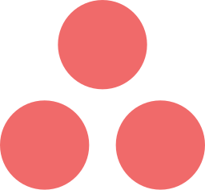
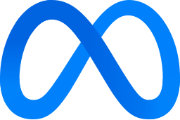
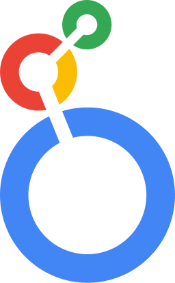
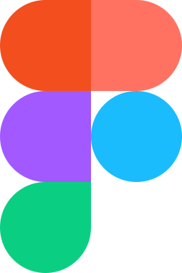

03 — Toolkit
What I work with.
Marketing ops & CRM
Salesforce
CRM & pipeline data
Marketo
MQL lifecycle
HubSpot
Campaign workflows
Zapier
Workflow automation

Asana
Project tracking
Notion
Docs & planning
SharePoint
Trackers & flows
Paid media & SEO
Google Ads
Search & display

Meta Ads Manager
Paid social
SEMrush
Keyword research
Ah
Ahrefs
Backlinks & audits
Analytics & BI

Looker
Dashboards
Power BI
DAX & modelling
Tableau
Visual analysis
Google Analytics 4
Traffic & attribution
Advanced Excel
VBA & macros
SQL
Querying & analysis
R
Statistical analysis
AI workflows
Claude
Analysis & drafting
Gemini Enterprise
Automated reporting
Lovable
Rapid prototyping
ChatGPT
Everyday workflows
Kimi
Long-document work
Design & content

Figma
Layouts & decks
Canva
Campaign creative
Cc
CapCut
Short-form video